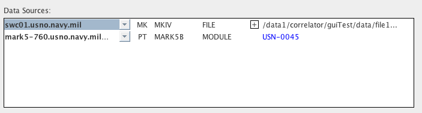
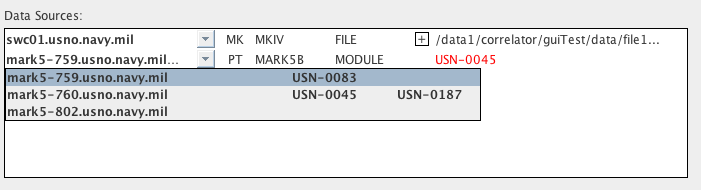

Job Control Window
Each Job in the Queue Browser Window has a Job "Control/Monitor"
Window
associated with it. This window, which can be produced by
picking
the "Control/Monitor for [JOB NAME]" option in the Job menu (right
click on a job in the Queue browser to raise this menu), contains
all
items required to tailor a DiFX job, and controls to actually run
and
monitor it.
Like many DiFX GUI
windows, the Control/Monitor Window is organized into "Sections"
that
can be opened or closed depending on whether you are interested in
the
details they contain. To open a section, click on its title
bar. Click in the same location to close it.
"Input File" Section
This section has an editable window containing the text of the
DiFX
"input" file - the file read by difx
that governs a run. There is also a field showing the full
path
to the input file on the DiFX host, and two buttons:
- Save uploads the exact
context of the text window to the DiFX host and places it in the
location given by the full path. This can be done if any
hand-editing changes have been made to the Input file (see the
warning
below about edits!). Unless this button is pushed, any
editing
changes you have made will have no effect.
- Refresh obtains the
contents of the file (given by the full path) on the DiFX host
and puts
it in the editable text window. This can be done if you
make
changes that you don't like or are unsure of. All of your
changes
will be lost. Note that "Refresh" can only undo changes
made
since that last "Save".
Warning: The text
field
allows you to edit the Input file, but remember that difx depends on this file to
run
properly. Because the original is automatically generated
there
is not a lot of format-checking of the content or clear and concise
error reporting if anything you put in there is incorrect - difx may just blow up.
Don't
mess around with this file unless you really know what you are
doing.
"Calc File" Section
This section is identical to the "Input File" section except that
it
holds the "calc" file (used for...uh...what is it used
for?). The
same controls are available and the same warnings apply.
"Machines List" Section
The Machines List section provides controls that can be used to
select the data sources and processors used to process the
job.
Selections are used to produce "Machines" and "Threads" files on
the
DiFX host which are used by mpirun to control
multiprocessing. The .machines and .threads files can be
generated using the "Apply" button, and then examined in the "Machines File" and "Threads File" sections as
outlined
below. Alternatively the "Apply" button can be ignored and
the
.machines and .threads files will be generated automatically when
the
job is started.
The Machines List Section has two primary panels which govern
"Data
Sources" (which machines are used as the source of data for each
antenna involved in a correlation) and "Processors" (which
machines are
devoted to round-robin DiFX processing).
Data Sources
The purpose of the Data Sources section is to allow the user to
select the machines that will serve as the "source" of data for
each
station involved in a correlation. For "MODULE" data types
the
data source will be the Mark5 unit that contains the required
module. For "FILE" data types the data source will be the
machine
that reads the data files off of disk. A "NETWORK" data
source is
the machine that serves as the network destination of a data
stream
from a remote source. Each station involved in a correlation
can
have only one data source machine assigned to it, and ideally each
station will have a different machine assigned to it.
The Data Sources panel includes a section for each station.
These sections differ somewhat depending on the type of data
source
being used. Different stations can use different data source
types, however for the moment it is assumed that all of the data
for a
particular station will be using the same data source type.
The following image shows the Data Sources panel for a two-station
correlation. The first station uses a FILE data source, and
the
second station uses a MODULE data source:

For each data source a pull-down menu is provided from which any
appropriate available machine can be selected. This is the
actual
data source that will be included in the resulting .machines
file. Following it is a checkbox labelled "Skip" that can be
used
to remove the station from the job (see
Removing Stations From a
Job
below), a column for the station involved (two letter
abbreviation),
the format for the data, and the data source type.
Subsequent
columns differ based on the data source type.
Initial Data Source Choice
When the Job Control Window is first opened, the GUI will have
chosen
what it feels are logical machine picks for each data
source. For
module data, a MarkV with the appropriate module will be used if
it can
be found. The machine for file data will be chosen based on
several user settings (see
Data Source
Defaults
in the Job Processing Settings of the Settings Window), an option
among
which is a specific assignment based on path.
FILE Data Sources
A file can be read by any data source that has access to the file,
thus
the source selection pull-down menu provides everything seen on the
DiFX cluster, including processors and Mark5 units (some of these
machines may not have access to the storage system containing the
file,
but unfortunately the GUI has no way of knowing this).

The last column of a FILE data source line shows the first in the
list of files that contain the data for the antenna (usually one
file
for each scan). This list can be expanded to see all of the
files. The names of the files are obtained from the "DATA
TABLE"
section of the .input file.

If the "DATA TABLE" section
of
the .input file does not contain anything (this can happen of the
data
for a station were listed in a File List
and vex2difx failed to
find
appropriate data files), the data are considered "missing" and the
data
source will be outlined in red.
This job will not process correctly, however there is a way to
repair
it - see Removing Stations
From a Job below.
MODULE Data Sources
A module data source can only be a machine capable of reading a
module
- a Mark5 unit. The pull down menu for a module data type
includes only the Mark5 machines that can be seen on the DiFX
cluster.

The VSNs of modules installed in each Mark5 are
listed
in the pull down menu - the Mark5 unit containing the VSN required
for
the experiment and antenna should be chosen as the data
source.
If the required VSN is not installed in the current data source
the VSN
name will be colored red, as in the
image
above. If the data source does contain the correct module
the VSN
name will be colored blue (see the
previous images).
NETWORK Data Sources
Currently a work in progress.
Choose
Data Source Based on Module
- When this option is checked, the GUI will attempt to pick
Mark5
data sources that contain the modules required for the
job. If
the proper modules are not present they will appear in red in
the data
source list. If you are not using Mark5 modules as your
data
source this option will have no effect. I might get rid of
this
check box - instead make this behavior a quiet and constant
default.
Removing Stations
From a
Job
- It may be desirable to run a job without one of its
associated stations. The most obvious situation where this
would
be the case would be when the data for a station was "missing"
for some
reason. In the example pictured below, the data source for
the
station "KE" is missing because the .input file had no data
associated
with it (it would have been "D/STREAM 1" in the .input
file).
Running DiFX on this job will result in an error. To draw
attention to this situation, the Data Source menu has outlined
the KE
station data in red.

To remove the missing station from the experiment (or to remove any
other station, if desired), check the "Skip" box associated with it,
and then click "Rebuild Job". The job can then be re-run
normally.
What is the GUI Doing
When it Rebuilds a Job?
To "rebuild" a job that runs with a different set of stations, the
GUI
has to
create an entirely new set of job-specific files, including the
.input
file, the
.calc file, and some others. This is done by creating a new,
job-specific .v2d file (based on the .v2d file for the experiment)
with
the station selections, then running vex2difx on it to create the new job files.
Before running vex2difx,
existing files are first renamed with ".0" appended to their
original
name for the first rebuild, ".1" for the second rebuild, etc, so
nothing is thrown away. The list of files for a job named "JOB
NAME" that are renamed (if they exist) are [JOB NAME].calc, [JOB
NAME].difxlog, [JOB NAME].flag, [JOB NAME].im, [JOB NAME].difx (a
directory), [JOB NAME].input, [JOB NAME].machines, [JOB
NAME].threads,
and [MANGLED JOB NAME].v2d (from a previous rebuild). The
"MANGED
JOB NAME" of the .v2d file matches the JOB NAME of other files
except
that all underscores have been replaced by hyphens (vex2difx does not permit
underscores in the .v2d file name).
Automating
the Rebuild Procedure
When data for a station are missing from a job it is often the case
that the job is part of a large, many-job experiment, where, for
whatever reason, some portion of the data for a scheduled station
does
not exist. In this case it may be many jobs that will have to
be
rebuilt and re-run. The GUI scheduling system can be set to
recognize when a scheduled job fails to run due to missing data,
rebuild the job with the offending station omitted, and re-run the
job
automatically. In fact, this is the default behavior of the
scheduler. See Running
Jobs With the Scheduler and Scheduler Settings.
Processors
- Eliminate Non-Responding Processors
- When guiServer on the DiFX host creates the Machines
and
Threads files, it will run a quick check on each processor and
data
source (if applicable) to make sure it has the proper
permissions to
execute an mpirun on the specific host. If a
processor
fails this test and this option is selected, it will be
automatically
removed from the list of processors used on the job.
- Eliminate Processors Over ____ % Busy
- This option will de-select any processors that have more than
a
given percentage of their CPU time consumed.
General Guidelines
- In general you have complete flexibility in which machines you
choose to do what, although the GUI will try to alert you if you
request something that won't work. Given that, there are a
number
of ways you can wisely choose your machines such that your
correlation
processing is more efficient.
With some exceptions (such as situations where you have
no
choice) a machine should not appear in both the Data Sources and
Processors list.
Each antenna should, if possible, have an independent
data
source associated with it. The nature of correlation
requires
that data will be required for all antennas simultaneously
and
having more than one antenna on a data source will cause that
source to
swap inefficiently between files.
If possible the head node should have a dedicated
machine
(not just a single thread on a machine). The head node
should not
appear in the list of processors.
If a processor machine has n cores, assign at
most n
- 1 threads to it. The GUI will try to do this
automatically.
"Machines File" Section
Slightly different - changes to the "Machines List" settings will
cause the regeneration of this file.
"Threads File" Section
more of the same
"Run Controls" Section
This section contains the controls for starting and stopping
jobs.
Status Bar
The Status Bar contains the current run state of the job.
Progress and some simple information are included. This
section
has no label, and cannot be opened or closed. It resides
just
below the "Run Controls" section.
Real Time Monitors
The Real Time Monitors section can be used to produce plots of
job
output data as they are produced (reasonably close to real
time).
Some first-level analysis can also be done. The primary aim
of
these plots is not to produce final, reduced results, but to
quickly
give the user an idea whether a job was a success, or in what ways
its
parameters need to be adjusted to make it better.
Message Monitor
The message monitor captures and displays all messages that
relate
to the job.